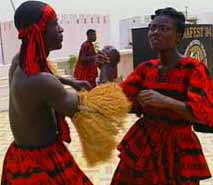

| Adzogbo was very popular during the reign
of Togbui Kundo, who was the last great king of ancient Dahomey (Benin).
Togbui Kundo was a great war commander
though he never entered the actual battlefield.
Tobgui Kundo acted as the
intermediary for the adepts of the Adzo (war) shrine.
|

|
When the adepts would become possessed with the spirit of Adzo, Togbui
would interpret and relay their messages from the spirit, to the
warriors. Togbui was later kidnapped by the British who tricked him by
agreeing to sign a treaty with him.
|